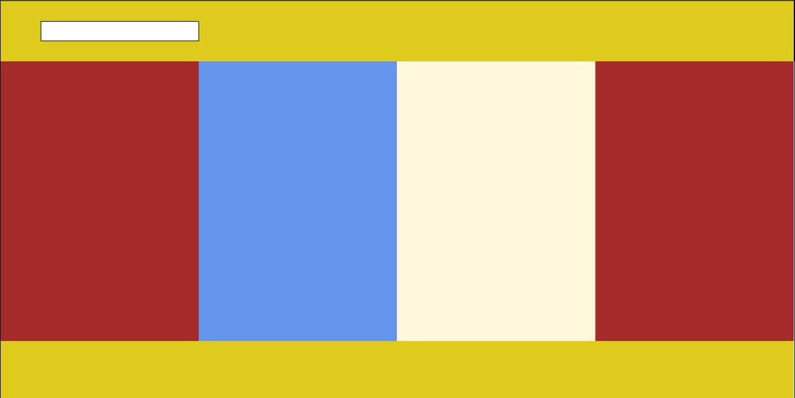
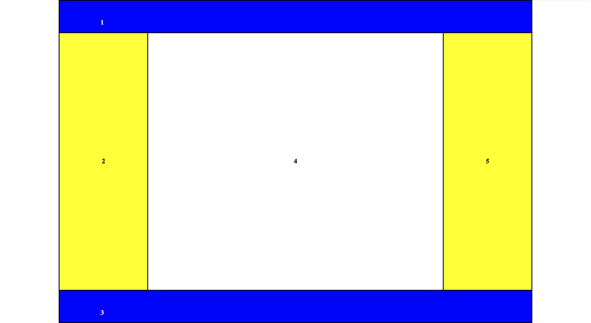
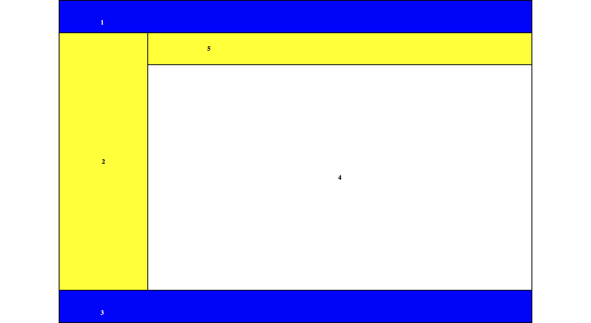
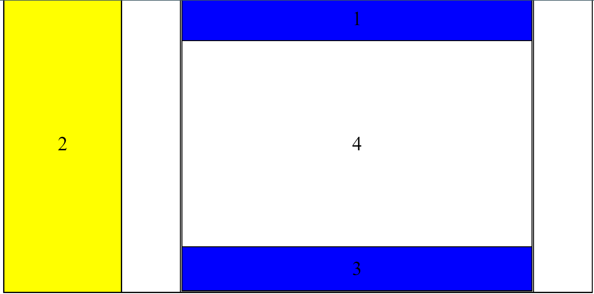

Веб-сторінки можуть містити різні об’єкти: тексти, меню, зображення тощо.
Для впорядкування об’єктів на веб-сторінці її (всю або частину) розмічають як таблицю.
Макет Гриненко Дениса

Макет Логвінського Станіслава

Макет Мельника Максима

Макет Шарковського Володимира
